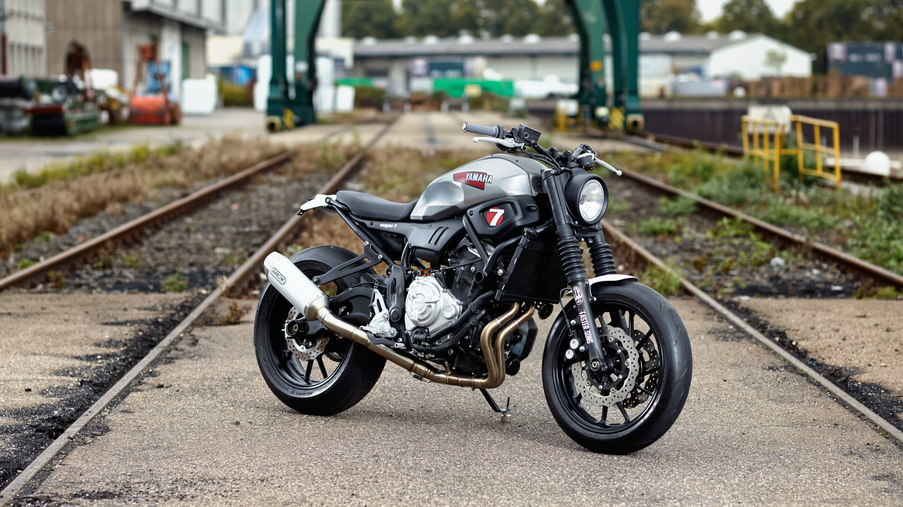

Yamaha xsr 700
Overview
The Yamaha XSR700 is a “neo-retro” / naked‐street styled motorcycle. It blends modern performance with a classic aesthetic. For instance:
It uses a 689 cc parallel-twin engine (the “CP2” platform) shared with other Yamaha bikes. Styling is retro‐inspired while the chassis, suspension and electronics are modern. It is suitable for urban riding, commuting, and some sporty fun — good “all-rounder” if you don’t want a fully dedicated sportbike or tourer.
Key Specifications (for recent model years)
Engine type: 689 cc liquid‐cooled DOHC parallel twin, 270° crank.Power output (approx): ~74 hp for certain model years.Torque: ~68 Nm for prior version.Transmission: 6-speed, chain final drive
Ideal Use / Rider Profile
This bike is ideal for:
- Riders who want a stylish everyday motorcycle that can also handle weekend rides.
- Someone who appreciates vintage/retro styling but wants modern reliability and performance.
- City / suburban usage, with occasional longer rides.
- Riders comfortable with around 180-190 kg wet weight and the seat height.
It might be less ideal for:
- A newbie who wants the lowest possible seat & weight (might find it a bit tall/heavy).
- Someone whose primary goal is ultra-long touring with full luggage and passenger all the time.
- Someone needing serious off‐road capability or super sportbike top‐end performance.
Market / Availability Notes
- Being from Yamaha, parts availability and service should be good in many regions (depending on your country).
- As with any used bike or imported model, check for local parts, service network, and whether the version is fully compatible with your country (emissions, legalities, etc).
- If buying used: check condition of tyres, chains, suspension, service history especially for the engine and valve clearance (for twins) and ensure electronics are working.